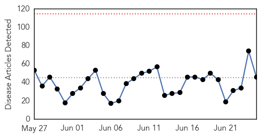

30 Day Trends
Web: 0 alerts, 0 warnings
Twitter: 0 alerts, 0 warnings
Top Articles:
- 1.000
- Ebola setback for Sierra Leone as new cases recorded
- 1.000
- Insulating Nigeria from MERS, Articles
- 1.000
- Ebola Returns to Sierra Leone’s Freetown, Articles
- 1.000
- Ebola-hit Sierra Leone quarantines 31 health workers
- 1.000
- Ebola cases not slowing in Guinea, Sierra Leone
- 1.000
- Ebola setback for Sierra Leone as capital records new cases
- 1.000
- Ebola cases not slowing in Guinea, Sierra Leone
- 1.000
- Ebola cases not slowing in Guinea, Sierra Leone
- 1.000
- Sierra Leone's Ebola outbreak dash hopes for epidemic's endMedCity News
- 0.999
- No plan to close borders
- 0.999
- Ebola setback for Sierra Leone as capital records new cases
- 0.999
- Guinea malaria toll believed spiked as sufferers shunned hospitals amid Ebola menace
- 0.999
- Ebola setback for Sierra Leone as capital records new cases
- 0.999
- State health officials issue MERS alert to physicians
- 0.999
- Ebola-hit Sierra Leone quarantines 31 health workers
- 0.999
- Ebola-hit Sierra Leone quarantines 31 health workers
- 0.998
- Tolbert Nyenswah Is Wrong: Shut The Damn Border Down
- 0.997
- Ebola-hit Sierra Leone quarantines 31 health workers
- 0.997
- DOCTOR IN NEW YORK CITY TESTS POSITIVE FOR EBOLA — United States
- 0.996
- Guinea quarantines villages in reinforced bid to stamp out Ebola
- 0.996
- Three Ebola virus variants identified in Guinea
- 0.996
- Three Ebola virus variants identified in Guinea
- 0.995
- 20 days after… Freetown records new cases « Awoko Newspaper
- 0.990
- Ebola setback for Sierra Leone as capital records new cases
- 0.988
- UNMEER SRSG Peter Graaff on visit to Guinea-Bissau - Guinea-Bissau
- 0.985
- Online News and Information Portal for Ghanaians In Diaspora
- 0.983
- Guinea-Bissau: UNMEER SRSG Peter Graaff on visit to Guinea-Bissau
- 0.980
- Leaders Praised For Ebola Response
- 0.956
- News in the Humanosphere: Fresh Ebola outbreak in Sierra Leone
- 0.932
- ‘Meet the Most Powerful Doctor in America’
- 0.926
- Olivia Wilde spotlights ripple effects of Ebola crisis
- 0.919
- Nimba Unveils Ebola Monument
- 0.910
- China plays active role in combating emerging global infectious diseases
- 0.903
- One of Sierra Leone's toughest slums beats Ebola - Sierra Leone
- 0.896
- Sierra Leone Poised to Lift Bar on Pregnant Girls Being Educated
- 0.895
- China plays active role in combating emerging global infectious diseases: Vice Premier[1]- Chinadaily.com.cn
- 0.883
- China, US increase teamwork in Ebola fight
- 0.813
- Geovax Labs : AFRICAN LEADERSHIP MAGAZINE to Present Two Prestigious Awards to GeoVax and Dr. Robert McNally
- 0.783
- Three Things to Do to Fight Ebola Recurrence
- 0.780
- Are There Some Positive Lessons From the Ebola Crisis?
- 0.751
- AFRICAN LEADERSHIP MAGAZINE to Present Two Prestigious Awards to GeoVax and Dr. Robert McNally
- 0.727
- Brought low by a virus-INSIDE Korea JoongAng Daily
- 0.691
- Ganta Ebola Monument Center dedicated
- 0.639
- Sierra Leone poised to lift bar on pregnant girls being educated
- 0.559
- Hombre gana 500.000 dólares luego de que doctores se burlaran de el en cirugía
- 0.529
- New UN Goals Lack Focus, Global Health Experts Warn
Top Tweets:
- 0.918
- Ebola-hit Sierra Leone quarantines 31 health workers - Yahoo News http://t.co/mY3lvTgwhu ebola EVD
- 0.761
- New: Effect of the Ebola-virus-disease epidemic on malaria case management in Guinea 2014 http://t.co/MfruexpL2R
- 0.727
- Ebola Is Far From Over In Guinea And Sierra Leone - Huffington Post http://t.co/50kWHXGlZ2 ebola EVD
- 0.708
- Distinct lineages of Ebola virus in Guinea during the 2014 West African epidemic http://t.co/8NPhcEPyjn
- 0.702
- Fingerprick test quickly diagnoses Ebola - Science /AAAS http://t.co/MAfkfN0xh3 ebola EVD
- 0.694
- Ebola crisis 'harming malaria fight' - Citifmonline http://t.co/KK4trIeceq ebola EVD
Web/News Articles
Tweets